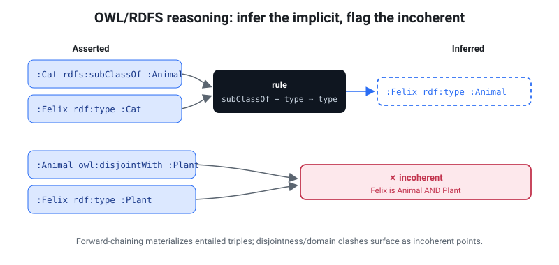

Reasoning & coherence checking
rete reasons over an ontology two complementary ways:
- Query rewriting — OWL 2 QL (jump): rewrite the query so its answer includes the entailed solutions, computed over the raw data with no materialization. Opt-in, lazy — it works over a remote file with no rebuild and fetches only the bytes the rewritten query touches — and the natural fit for ontology-mediated query answering.
- Materialization — OWL RL / RDFS (the rest of this page): forward-chain the
entailed triples to a fixpoint, to either bake them into the file
(
rete build --materialize) or coherence-check it (rete reason).
Rule of thumb: reach for query rewriting to answer queries under an ontology without touching the data; reach for materialization to persist inferences or detect contradictions.
rete reason runs a prototype forward-chaining OWL RL / RDFS reasoner over a
file's default graph: it materializes the obvious RDFS/OWL entailments to a
fixpoint, then scans the closed graph for incoherent points — logical
contradictions such as an individual that belongs to two disjoint classes.
OWL RL in one paragraph. OWL (the Web Ontology Language) lets you state schema axioms about your data — class hierarchies, property characteristics, disjointness, identity. A reasoner draws the logical consequences (e.g. "if
:a causes :band causation is transitive, then:a causes :c") and detects contradictions. OWL RL is the rule-based profile of OWL designed exactly for forward-chaining materialization over triples, which is what this implements.
Loading an OWL ontology. An OWL ontology is just RDF triples.
rete buildingests the two common RDF serializations directly — Turtle (.ttl) and RDF/XML (.rdf/.owl) — sorete build my-ontology.owl -o onto.rete && rete reason onto.reteworks with no conversion step. (OWL/XML and Functional Syntax are not RDF; convert them to RDF/XML first — see Compatibility.)
Scope — this is a prototype subset, NOT full OWL DL. It covers the rules in the tables below by exact-string matching on canonical N-Triples tokens. It does not do equality reasoning beyond the checks listed, class expressions (
owl:Restriction, intersections/unions), cardinality, datatype reasoning, or open-world consistency in the OWL DL sense. Use it as a lightweight coherence gate, not a certified entailment regime.

Usage
rete reason data.rete # report entailment count + incoherent points
rete reason data.rete --materialize # also print base + inferred graph (N-Quads)
rete reason data.rete --materialize --format ttl
rete reason --url https://host/data.rete # check a REMOTE file over HTTP range reads
rete reason data.rete --check # terse one-line verdict (CI gate)
rete reason data.rete --verify-card # re-check a build-time coherence stamp
rete reason exits non-zero when any inconsistency is found, and zero when
the graph is coherent — so it drops straight into CI as a coherence check. --url
reads a remote .rete lazily over HTTP ranges (like rete sparql-url), refusing an
incomplete result if a range fetch fails. --check prints a single verdict line for
scripts.
Build-time materialization
rete reason --materialize prints the closed graph but doesn't change the file.
To persist the entailments — so they ship in the .rete and need no
query-time reasoning — materialize at build time:
rete build data.nt -o data.rete --materialize
This runs the same reasoner over the default graph during the build and stores the
inferred triples alongside the asserted ones (the index deduplicates any overlap).
After that, a plain triple/SPARQL query sees the entailed triples directly — e.g.
with Class subClassOf Super and x a Class asserted, x a Super is queryable
with no reasoner in the loop. The build aborts (non-zero) if the graph is
logically incoherent, so it never bakes a contradiction into a published file.
Trade-off: a materialized file is larger and fixes the entailments at build time
(re-build to re-materialize after the ontology changes); an un-materialized file
stays compact and you run rete reason on demand.
Build-time coherence stamp
rete build --reason runs the reasoner once at build time and stamps the verdict
into the Dataset Card — so a remote reader learns the graph's coherence from the
index-free card (rete card-url, ~2 ranges) with zero compute, never fetching
the graph:
rete build data.nt -o data.rete --reason
rete card data.rete # …includes a `coherence:` block
# coherence:
# verdict : coherent
# scope : default · rules owl-rl-subset/v1 · not materialized
Unlike --materialize, --reason does not abort an incoherent graph — it
records coherent: false (with a by_kind histogram) honestly, so a known-bad
dataset can still publish its status. Combine --reason --materialize to both bake
the entailments and stamp the verdict.
The stamp is deterministic (sorted histogram, no free-text detail) so it folds into
the file's content hash without destabilizing it — two --reason builds of the same
input are byte-identical, and a build without --reason is byte-identical to
before the feature existed. To keep the stamp honest it carries a rules tag
(rete_core::REASON_RULESET); rete reason --verify-card recomputes the verdict and
fails if it drifted from the data or the rule set changed:
rete reason data.rete --verify-card
# coherence card verified: coherent (0 inconsistency(ies), rules owl-rl-subset/v1)
So a CI pipeline can stamp coherence at build time and assert it never silently goes stale — and a consumer can trust the card's verdict because it is cheap to re-verify.
Entailment rules (materialized to a fixpoint)
| Rule | If the graph contains… | …then entail |
|---|---|---|
| subClassOf transitivity | c rdfs:subClassOf d · d rdfs:subClassOf e | c rdfs:subClassOf e |
| type propagation | x a c · c rdfs:subClassOf d | x a d |
| subPropertyOf | p rdfs:subPropertyOf q · x p y | x q y |
| subPropertyOf transitivity | p rdfs:subPropertyOf q · q rdfs:subPropertyOf r | p rdfs:subPropertyOf r |
| domain | p rdfs:domain c · x p y | x a c |
| range | p rdfs:range c · x p y | y a c |
| inverseOf | p owl:inverseOf q · x p y | y q x (and the reverse direction) |
| SymmetricProperty | p a owl:SymmetricProperty · x p y | y p x |
| TransitiveProperty | p a owl:TransitiveProperty · x p y · y p z | x p z |
Inconsistency rules (the incoherent points)
Detection runs after materialization, so entailed types count — a
disjointness violation that only shows up once rdfs:subClassOf has propagated is
still caught.
kind | Triggered by |
|---|---|
disjoint-classes | x a c · x a d · c owl:disjointWith d (either direction) |
sameas-differentfrom | x owl:sameAs y · x owl:differentFrom y (either direction) |
functional-property | p a owl:FunctionalProperty · x p y · x p z · y ≠ z (and not y owl:sameAs z) |
owl-nothing | x a owl:Nothing |
Worked example: a causal model
examples/causal.nt is a small causal graph. It carries (1) a causal cycle
a → b → c → a, and (2) an incoherent point: a patient :p typed as both
HealthyState and DiseaseState, which are declared owl:disjointWith.
The two kinds of problem are found by two complementary tools:
A causal cycle is a structural fact about the data — find it with a SPARQL property path:
rete sparql causal.rete "PREFIX e: <http://ex/> SELECT ?x WHERE { ?x e:causes+ ?x }"
# ?x=<http://ex/a>
# ?x=<http://ex/b>
# ?x=<http://ex/c>
A disjointness (or functional-property) violation is a logical
contradiction — find it with rete reason:
rete build examples/causal.nt -o causal.rete
rete reason causal.rete
# inferred 9 new triple(s)
# 1 inconsistency(ies) found:
# [disjoint-classes] <http://ex/p> is typed as both <http://ex/DiseaseState> and <http://ex/HealthyState>, which are owl:disjointWith
# Error: 1 inconsistency(ies) — graph is incoherent (exit code 1)
The entailment count (9) reflects the materialized subClassOf chain
(Disease ⊑ Condition ⊑ Factor) and the transitive :causes closure
(a causes c, etc.). Because the graph is incoherent, the command exits non-zero.
Remote / in-browser coherence
The same coherence checks run in the browser against a remote .rete over HTTP
range reads — drop a file on any range-serving host (S3, GitHub Pages, a CORS
proxy), hand the client a URL, and check coherence with no server and no full
download. The WASM build exposes three entry points, tiered by how much of the
file they touch. They mirror the SHACL family (shacl_url / shacl_construct_url)
and are worker-only (the engine is synchronous and uses blocking XHR, which
browsers permit only off the main thread). Each returns a JSON envelope with a
remote: { fileLength, bytes, requests } block so the UI can show exactly how
little of the file was pulled; a failed range fetch mid-check is an error,
never a silently-incomplete (and so possibly false-"coherent") result.
| Tier | Function | Reads | Finds |
|---|---|---|---|
| 0 — schema | check_schema_url(url) | header + the schema block only (2 ranges, ~1–8 KB at any graph size, never the index, dictionary, or community summary) | subClassOf cycles; unsatisfiable classes (a class that is a subclass of two owl:disjointWith classes) |
| 1 — selective | reason_construct_url(url, construct) | only the tiles the CONSTRUCT's constant-predicate patterns touch (one warm cache) | every contradiction visible from rdf:type + the class/equality T-Box (disjoint-class clashes, sameAs/differentFrom) |
| 2 — full | reason_url(url[, graph]) | materializes the whole graph (≈ the entire file) | every incoherent point the CLI rete reason finds |
Tier 0 answers "is the ontology coherent?" — the subClassOf DAG plus the
owl:disjointWith / owl:equivalentClass axioms travel in the schema pyramid, which
decodes without the dictionary or the index. The header records the schema block's
byte length, so the check fetches just the header and that block (2 ranges) — a flat
~1–8 KB at any graph size (8.1 KB of a 48.8 MB file; see
Coherence tier costs). It cannot see
instance-level clashes (a node typed into disjoint classes, functional-property
clashes) — those need the A-Box (Tier 1/2). One soundness caveat: the shipped hierarchy
is truncated, so on a very large ontology a pruned ancestor can hide an unsatisfiable
class (a false coherent, never a false incoherent).
Tier 1 is the selective sweet spot. The default slice is a UNION of
constant-predicate CONSTRUCT branches so each routes to a single predicate's
tiles:
CONSTRUCT { ?x rdf:type ?c . ?sub rdfs:subClassOf ?sup .
?c1 owl:disjointWith ?c2 . ?s1 owl:sameAs ?s2 . ?f1 owl:differentFrom ?f2 }
WHERE { { ?x rdf:type ?c } UNION { ?sub rdfs:subClassOf ?sup }
UNION { ?c1 owl:disjointWith ?c2 } UNION { ?s1 owl:sameAs ?s2 }
UNION { ?f1 owl:differentFrom ?f2 } }
Slice-correctness invariant. A Tier-1 CONSTRUCT must pull the T-Box predicates (
rdfs:subClassOf,owl:disjointWith,owl:sameAs) into the slice, not justrdf:type. The reasoner detects a disjoint-class clash only aftersubClassOftype-propagation, so a slice missingsubClassOfwould silently miss a propagation-dependent contradiction.
Try it
The playground's Coherence tab runs all three
tiers in the browser. The demo checks run against a
tiny causal ontology (examples/causal.rete) with both kinds of
defect planted: Tier 0 reports :Relapsed unsatisfiable (a subclass of the
disjoint HealthyState and DiseaseState) from ~2–3 ranges; Tier 1/2 report the
instance clash (:p is both). The live counter shows how few bytes each tier
fetches.
Reasoning by query rewriting (OWL 2 QL)
Everything above materializes: it computes entailed triples and (optionally) stores them. That fixes the inferences at build time and grows the file — the opposite of rete's cloud-native, range-queried design, where the ABox may be hundreds of millions of triples on a remote host.
The OWL 2 QL profile exists for exactly this case — a large ABox, a small
TBox, and queries that are first-order rewritable. Instead of baking inferences
into the data, rete rewrites the query so that evaluating it over the raw
data yields the certain (entailed) answers. A remote .rete becomes
ontology-aware with no rebuild, and only the bytes the rewritten query touches
are fetched.
Reasoning is opt-in — a plain query is never changed:
rete sparql data.rete "SELECT ?o WHERE { ?o a :Aves }" --entail
rete sparql-url https://host/data.rete "…" --entail # lazy, over HTTP range
In the browser, the playground's 🧠 Reason toggle
(beside the Labels switch) runs the active query with entailment on; the WASM API
is Graph.query_reasoned / RemoteGraph.query_reasoned.
What is entailed
| Axiom | A query for … also returns … |
|---|---|
rdfs:subClassOf | ?x a C → instances of every subclass of C (transitively) |
rdfs:subPropertyOf | ?x P ?y → pairs related by any subproperty of P |
rdfs:domain / range | ?x a C → subjects/objects of a property whose domain/range is ⊑ C (composing through subPropertyOf) |
owl:inverseOf | ?x P ?y → pairs ?y Q ?x for any Q inverse to P |
owl:someValuesFrom (A ⊑ ∃P, A ⊑ ∃P⁻) | ?x P ?_ (or ?_ P ?x) with an existential end → every ?x that is (transitively) such an A |
# gbif-birds: occurrences are typed to their SPECIES, and each species carries a
# subClassOf chain up to :Aves. WITHOUT reasoning this matches nothing directly;
# WITH --entail it returns real occurrences via the taxonomy — no hand-written path.
SELECT ?o WHERE { ?o a <https://w3id.org/rete/gbif/taxon/class/Aves> } LIMIT 20
How it works
The rewrite is a post-lowering pass on the query plan — the hot triple matcher and every non-reasoned query are byte-identical.
- Hierarchy (
subClassOf/subPropertyOf) is exactly what rete's goal-directed property paths already do, so a hierarchy atom becomes a path over the raw data —?x a C→?x a ?c . ?c rdfs:subClassOf* C(reflexive, so a direct type still matches). NoUNIONenumeration, so it does not blow up on deep taxonomies (gbif's ~1,200 classes stay one path, not 1,200 query branches). - Domain / range / inverseOf / existentials add
UNIONbranches. A tiny TBox read (the objects of the hierarchy predicates, plus whether the graph declares domain/range/inverse/someValuesFromaxioms at all) gates the rewrite, so an atom whose class/property has no relevant axioms — and a graph with no ontology — is left untouched, making reasoning zero-overhead where it can add nothing.
Existential soundness
The existential rewrite (?x P ?y answered from A ⊑ ∃P) is sound by
construction: it fires only when the existential end (?y, or the subject for
∃P⁻) is purely existential — it occurs exactly once in the whole query and is
not returned — because an anonymous ∃P successor can neither be projected nor
joined. reason_rewrite counts every variable occurrence across the plan
(patterns, paths, filter/bind expressions, sub-queries) and consults the SELECT
list; where the end is bound, shared, or projected, the branch is skipped.
Boundary
Every DL-Lite_R axiom type is covered. The one remaining case is the PerfectRef
reduction step — existential chaining, where a shared join constraint is
itself entailed by an existential (a query joins ?x P ?y with ?y a C, and
∃P⁻ ⊑ C makes the ?y a C atom redundant so ?y becomes existential). That
query shape is rare, and reasoning is never unsound regardless: with it off you
get exact matches; with it on you get the entailed answers for the supported cases
— it can only ever be incomplete for that one chaining shape, never wrong.
This query-rewriting reasoner and the materializing one above are independent: use
--entail to answer queries under the ontology lazily; use --materialize /
rete reason to bake inferences or check coherence.